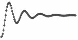

|
BuddhaSasana Home Page |
Vietnamese, with Unicode Times font |
Tìm
hiểu Trung Luận
Nhận Thức Luận Phật Giáo
Hồng Dương Nguyễn Văn Hai
Phật lịch 2544
|
2.1 Trung quán luận: phá tà hiển chánh B ồ tát Long Thọ viết rất nhiều sách, nhưng bộ sách căn bản chuyên về tánh Không là bộ Trung quán luận (Mùlamadhyamakakàrikà; Học thuyết Trung đạo). Còn có hai bộ luận khác bàn về tánh Không hiện lưu hành ở Tây tạng là Lục thập tụng Như lý luận (Yuktisasthikà-kàrikà) và Thất thập tụng Không tính luận (Sunyatàsaptatikàrikà).Bộ Trung quán luận gồm 27 phẩm, 446 bài tụng (tính bốn câu một bài; trong bản Phạn ngữ con số bài tụng nhiều hơn, 450 bài), bao quát hầu hết các vấn đề liên quan đến thế giới luân hồi và thế giới giải thoát. Bồ tát Long Thọ không những bác bỏ một số kiến giải sai lầm của trường phái A tì đàm hay của các triết gia kể chung, mà còn bác bỏ tất cả những quan niệm duy thức và đa nguyên để gián tiếp thiết lập học thuyết nhất nguyên về tánh Không (Sùnyavàda; Không luận). Trung quán luận cũng là một trong ba tác phẩm căn bản chuyên về học thuyết Trung đạo của Tam luận tông ở Trung Hoa và Nhật bản. Hai tác phẩm kia là Thập nhị môn luận (Dvàdasà-dvàra) cũng của Bồ tát Long Thọ, nhằm kiểu chính những sai lầm của chính các nhà Ðại thừa và Bách luận (Satasàstra) của Ðề bà (Arya-deva), đệ tử của Ngài, chủ đích bác bỏ những tà kiến của Bà la môn giáo. Vì Trung quán luận quá thiên trọng về duy tâm luận phủ định, nên thường bị hiểu lầm là chủ trương hư vô luận (nihilism). Khác với Trung luận dùng biện chứng phủ định để thuyết minh lý chân không, trong Ðại trí độ luận là bộ luận giải thích kinh Ðại Phẩm Bát nhã, Bồ tát Long Thọ giảng về lý thật tướng diệu hữu một cách xác quyết hơn. Vì thế hai bộ luận này bổ túc cho nhau đối với ai muốn thông hiểu tư tưởng Không của Bát nhã. Trung quán luận sử dụng phương pháp biện chứng không những nhằm đả phá triệt để mọi vọng tưởng hý luận và mê lầm tà kiến để hướng dẫn nhận thức giáo lý tánh Không mà thực ra còn có mục đích giáo hóa chỉ đường tu tập để thực chứng trí Bát nhã nữa. Nguyên bản Phạn ngữ hiện vẫn còn tồn tại. Bản Hán văn do Cưu ma la thập (Kumàrajiva) dịch mang tiêu đề Trung quán luận. Chữ Madhyama của tiếng Phạn không có nghĩa của chữ "quán". Chữ "quán" thêm vào đã thành một danh từ thông dụng của Hán văn và làm sáng tỏ học thuyết Trung quán trên khía cạnh thực hành. Tuệ sĩ nhận xét rằng Ngài La Thập với cách chọn lựa tiêu đề như vậy đã nói lên đầy đủ ý nghĩa của triết lý Trung quán. Ðiều này "phải kể là La Thập đã có công lớn nhất trong việc phát huy triết lý Trung quán". Tuệ sĩ giải thích, "Khi Trung được khai hiển và chỉ thị bởi Luận, thì thể ngộ và thể nhập phải do thực hành. Như thế, ở phương diện thực hành, Trung như là quán cảnh, là đối tượng được hướng đến. Trong phương diện thực hành này, vì bấy giờ Trung là đối tượng quán cảnh, nên thực tại sẽ dễ dàng bị bóp méo, và cố nhiên nó sẽ mất ý nghĩa là Trung đó. Như thế quán trí phải được chuẩn bị tất cả những điều kiện cần thiết để có thể quán chiếu được Trung đạo quán cảnh". Nếu ví với sự thể hiện ba phương diện của Bát nhã trong sự tựu thành con đường thể nhập Tuyệt đối, thời Trung tương ứng với thực tướng Bát nhã; Quán tương ứng với quán chiếu Bát nhã; và Luận tương ứng với văn tự Bát nhã. Vì Tuyệt đối không thể định nghĩa cho nên tánh Không không phải là một định nghĩa về thực tại mặc dầu khi nói đến tánh Không ta thường có cảm tưởng bản tánh của thực tại là Không. Nếu bản chất hiện thực là Không thời hóa ra ta đã nắm được trọn vẹn thực tại trong tay và mất hết hứng thú tu tập tiến đến cảnh giới tự chứng của Phật. Trung quán luận cho rằng đức Phật thuyết về pháp Không như là phương tiện đối trị và đã tuyên thuyết giáo lý của mình cho chúng sinh bằng phương tiện Nhị đế. Chính theo tục đế mà đức Phật giảng rằng tất cả pháp đều có là do nhân duyên; nhưng theo chân đế thì tất cả các pháp đều không, nghĩa là bản tính của tất cả các pháp là không có tự tánh. Mặt khác, đối với sự vật, không nên quan sát và phân tích theo lối nhị biên, chủ đối với khách, tự đối với tha, nhân đối với quả, v... v... , mà trái lại cần phải áp dụng phương pháp Nhị đế, nghĩa là dựa trên hai lập trường chân đế và tục đế. Trung luận đã đứng trên lập trường chân đế để phá sự quan sát và phân tích sai lầm của Tục đế. Bởi vậy Trung luận muốn ta hiểu rõ Nhị đế, tục đế và chân đế, là những diệu dụng của phương tiện và trí tuệ. Hiểu rõ tục đế chính là hiểu rõ những đặc tính của ngôn ngữ, vai trò và giới hạn của nó. Sử dụng ngôn ngữ mà không hiểu rõ sự tương quan giữa tên gọi của hiện thực và bản thân của hiện thực là nguyên nhân của mọi hý luận (prapanca). Hý luận ở đây có nghĩa là: (1) mệnh đề phát biểu, (2) ý niệm hay quan niệm, (3) nghiệp phát biểu, (4) sự thể được phát biểu, và (5) toàn thể thế giới hoạt dụng của ngôn ngữ tức là cấu trúc bao gồm hết thảy bốn nghĩa vừa kể và cả tri lượng nữa. Hý luận sinh ra bởi tại không hiểu lý duyên khởi: "cái này có thì cái kia có; cái này không thì cái kia không; cái này sinh thì cái kia sinh; cái này diệt thì cái kia diệt". Hý luận phát xuất từ nhận thức điên đảo do vô minh và khát ái sinh ra, lầm cái không có thành cái có: vô thường mà cho là thường, khổ đau mà cho là lạc thú, vốn không có cái ta, cái của ta mà chấp là có ngã, có ngã sở, các pháp đều bất tịnh mà cho là tịnh. Lại có khi nói hết thảy các pháp đều không, không có gì, người tà kiến lại chấp thủ hý luận về tướng không của các pháp. Bài tụng Trung luận, XXII.15 nói rõ: "Ðức Như Lai đã siêu việt qua mọi hý luận, thế nhưng con người cứ sanh khởi ra hý luận. Vì hý luận phá hủy tuệ nhãn nên không thể thấy Phật." Do đó, tiêu diệt hý luận (nisprapanca) là cốt để đoạn trừ nguồn gốc của mê hoặc phiền não. Trung luận trình bày rất chi tiết cặn kẽ vấn đề tiêu diệt hý luận trong suốt hai mươi bảy phẩm. Cứu cánh "vô hý luận, ngôn vong lự tuyệt" chỉ thấu đạt khi đặc tính của ngôn ngữ cũng như sự tương quan giữa ngôn ngữ và thực tại được minh giải bằng phê bình theo thuyết tánh Không. Ðó là ý nghĩa của bài tụng Trung luận, XVIII.5: "Nghiệp và phiền não diệt nên gọi đó là giải thoát. Nghiệp và phiền não là những cái không có thật. Một khi thâm nhập tánh Không (nhập Không) thì mọi hý luận đều bị tận diệt." Phương pháp phê bình theo thuyết tánh Không dựa trên những tương quan nhân quả biện chứng hay trên những tiến trình dịch hóa pháp. Chân lý chỉ có thể đạt được bằng phủ định hay bài bác các tà kiến và những sai lầm. Phá và chỉ có phá mới có thể dẫn đến cứu cánh chân lý. Nếu căn cứ trên nhận thức luận để giải thích về thế giới hiện tượng thời bất luận kiến giải nào nhìn theo thuyết tánh Không cũng không ngoài sự nhận lầm cái không có làm có, cho nên, hết thảy rốt cục cũng chỉ là không. Không những thế mà thôi, đến ngay cái biểu tượng của cái không cũng lại là không nốt. Chủ ý của Trung quán luận là muốn đem thuyết Chân Không của Bát nhã thành lập trên phương diện biện chứng luận. Theo Bồ tát Long Thọ, chân không có nghĩa là hết thảy hiện tượng chỉ là hiện hữu tương quan, do đó không có tự tính. Tuy vô tự tính nhưng vạn pháp vẫn tồn tại hiện hữu. Ðó là diệu hữu. Chân không và diệu hữu không bao giờ xa lìa nhau. Bởi vậy, cái không của Bát nhã không phải là cái không trống rỗng tiêu cực, mà là cái chân không diệu hữu. Liền với cái chân không phủ định luôn luôn có cái diệu hữu khẳng định theo sau. Qua bài tụng Trung luận, XXIV.18 được xem như có giá trị mô tả tiến trình tu chứng: "Các pháp do duyên khởi (pratìtyasamutpàda), nên ta nói là Không (sùnyatà), là Giả danh (upàdàya-prajnapti), và cũng chính là Trung đạo (madhyamà pratipat)", Bồ tát Long Thọ xác nhận rằng duyên khởi là đồng nghĩa với Không, với Giả danh, và với Trung Ðạo. Ngay ở đầu bài tụng các pháp được nói đến là do duyên khởi ai ai cũng kinh nghiệm được trong đời sống hằng ngày, một đời sống mà bản chất không mấy ai thấy được là Không. Lý duyên khởi có thể giải thích sự hiện hữu của vạn pháp vô tự tính, đưa đến xác tín rằng duyên khởi loại trừ cực đoan chấp không. V?y tánh Không bao hàm Duyên khởi. Mặt khác, với duyên khởi dùng làm lý lẽ, Trung luận áp dụng biện chứng pháp bác bỏ cực đoan chấp hữu cho rằng sự vật là có tự tính và biệt lập với sự vật khác. Như vậy Duyên khởi bao hàm tánh Không. Do đó mà tánh Không và Duyên khởi đồng nghĩa. Ngôn ngữ vô tự tính vì phụ thuộc rất nhiều điều kiện. Sự có mặt của nó là do sự có mặt của sự thể. Sự thể cũng vô tự tính. Có cái này là vì có cái kia. Nói về một sự thể là nói qua tên gọi của nó. Tên gọi đó là giả danh vì tên gọi đó chỉ biểu tượng cho sự thể chứ không phải bản thân thực tại của sự thể. Ngài Long Thọ nói trong Ðại Trí độ luận: "Lụa tuy không như sừng thỏ lông rùa hoàn toàn không có, nhưng do nhân duyên hội hợp cho nên có, nhân duyên tan rã cho nên không, như đám rừng, như toán quân, các thứ ấy đều là có mà không thật. Ví như người tuy có tên gọi là người mà không thể tìm ra pháp người. Lụa tuy có tên gọi cũng không thể tìm ra lụa thật." Duyên khởi có tên mà không thật cho nên duyên khởi là giả danh. Vì vậy khi đặt cái danh vào định thức duyên khởi thời đó là Giả danh, nghĩa là chỉ có trên danh ngôn chứ không có trong thực tế. Bài tụng Trung luận, I.1 y cứ vào lý duyên khởi nêu ra bốn lý do để phủ định tự thể tức sự thể có tự tính dị biệt. Nếu có tự tính dị biệt thời sự thể không hiện khởi (1) từ chính nó, (2) từ một cái khác, (3) từ cả hai hợp lại, và (4) không do nhân duyên nào cả. Trong trường hợp (1), nếu tự thể sinh ra từ chính nó thời nó chứa đựng hai tự thể là nhân tức chủ thể sinh và quả tức là cái được sinh. Ðiều này không thể có được. Trong trường hợp (2), nó là một tự thể, cái khác cũng là một tự thể. Ðã thừa nhận hai tự thể dị biệt tất không thể nói cái này sinh ra từ cái khác. Trong trường hợp (3), hai tự thể dị biệt không thể phối hợp với nhau được, vì nếu phối hợp thời mỗi một tự thể đánh mất tự tính của chính nó. Trong trường hợp (4) cuối cùng, tự thể mà hiện hữu thời đó là một kết quả. Như vậy hiện hữu đó không thể không có nhân của nó. Sự thể vì vô tự tính nên hiện khởi do nhân duyên. Vậy vô tính duyên sinh nên duyên sinh là Giả danh. Ðằng khác, sự thể hiện khởi do nhân duyên thời không có tự tính dị biệt. Do đó duyên sinh vô tính nên duyên sinh là Không. Ðó là ý nghĩa Trung đạo của lý duyên khởi. Trong câu đầu của bài tụng Trung luận XXIV.18 vừa khi các pháp do duyên khởi được nêu ra, tánh Không phủ định Duyên khởi ngay ở câu thứ hai, nhưng liền khẳng định lại Duyên khởi là Giả danh ở câu thứ ba. Ðó là thứ tự diễn tả tư tưởng Không đã thấy được trong "Sắc tức thị Không, Không tức thị Sắc" của Tâm kinh hay trong ngôn ngữ "tức phi, thị danh" của kinh Kim Cang. Câu cuối của bài tụng xác định Duyên khởi "chính là Trung đạo". Ðem so với hai danh từ tánh Không và Duyên khởi, thời danh từ Trung đạo có tính cách khẳng định hơn, nhưng tựu trung đó cũng chỉ là một lối phát biểu của Bồ tát Long Thọ để phủ định tính thực hữu của thế giới hiện tượng mà thôi. Trung đạo là không chấp Có không chấp Không, không khẳng định không phủ định. Theo Trung quán luận, Trung đạo chính là sự chuyển biến từ có Duyên khởi qua không có Duyên khởi tức Không, rồi trở lại có Duyên khởi dưới hình thức Giả danh. Trung đạo di chuyển biện chứng từ khẳng định qua phủ định rồi lại khẳng-định-thanh-lọc-qua-phủ-định. Trung đạo không phải là một điểm ở trong khoảng giữa của hai cực đoan mà là một tiến trình tu tập theo dịch hóa pháp, "đi từ hủy thể đến tướng, hủy tướng đến dụng, hủy dụng đến ngôn từ, và phá hủy ngôn ngữ để chuẩn bị cho thể nhập Tuyệt đối. Tiến trình này có thể tổng quát trong ba giai đoạn: Không, hủy thể; Giả danh, hủy tướng và dụng và ngôn ngữ; Trung đạo, tựu thành con đường của thể nhập." (Triết học về tánh Không, Tuệ Sĩ). Mặc dầu chữ Trung (madhyamaka) dùng trong bài tụng XXIV.18 này là nguồn gốc của tên sách Madhyamakakàrikà (Trung quán luận) và mặc dầu chủ ý của Trung quán luận là trình bày thuyết Trung đạo, trong suốt quyển sách chữ Trung đạo chỉ hiện ra rõ ràng một lần ở bài tụng này mà thôi. Một lần khác, Trung đạo được đề cập một cách gián tiếp trong bài tụng XV.8 nhắc đến kinh Ca Chiên Diên Thị (Kàtyàyanàvavàda Sùtra), Tương Ưng bộ. Kinh này trình bày về việc đức Phật giáo hóa tôn giả Ca Chiên Diên về chánh tri kiến nên xa lìa cả Vô lẫn Hữu. Ðức Phật nói đến Trung đạo: "Xa lìa hai cực đoan ấy, này Kàtyàyana, Như Lai thuyết pháp theo trung đạo". Tiếp theo, đức Phật thuyết minh lý duyên khởi thu gọn trong mười hai nhân duyên dùng làm nền tảng lập cước cho pháp môn Trung đạo của Ngài. Nói cách khác, lý duyên khởi chính là Trung đạo. Phải chờ đến phẩm XXIV mới thấy rõ quan điểm "Tánh Không của Không hay Không Không" (emptiness of emptiness) của Bồ tát Long Thọ qua quan hệ giữa Không, Giả, và Trung đã được hàm ý trong bài tụng tán khởi. Lý do là trước hết Ngài phải thuyết minh hết thảy mọi pháp đều không, ngay cả cái không cũng không nốt trong suốt hai mươi ba bài tụng đầu. Sau đó tánh Không mới đương nhiên hiển lộ. Trung luận xác quyết tánh Không là bản thể của Duyên khởi và Duyên khởi là hình tướng của tánh Không, cả hai đều là lý tính đặc thù của Trung đạo. Về mặt tu dưỡng, phát triển trí tuệ một cách thích đáng trong dòng tâm thức để liễu tri tánh Không là một phương pháp đối trị vọng tưởng ngã chấp. Nói cách khác, để thấy cái tôi không thực hữu thời cần phải thành đạt thứ trí tuệ hiểu được hình thức bản năng của sự chấp thủ cái tôi. Nhờ thế mới có thể nhổ tận gốc sự chấp ngã theo bản năng tức là cắt đứt gốc rễ của sinh tử. Theo Ð?i thừa, bồ đề tâm là cửa ngõ duy nhất của con đường đến giải thoát, là pháp tu căn bản để đạt được tuệ quán đặc biệt chứng ngộ tánh Không. Phương pháp căn bản để thực hiện tư tưởng "chân không diệu hữu" của Ðại thừa được nhắc đến một cách rất tha thiết và thành khẩn trong bài văn Khuyến phát bồ đề tâm của Ðại sư Thật Hiền do HT Thích Trí Quang dịch và giải. Ở phần tiểu dẫn, Hòa thượng viết: "Ðối với người học Phật, phát bồ đề tâm không những là bước đầu mà còn là căn bản, không những là căn bản mà còn là cứu cánh", và giải thích: "Phát bồ đề tâm, nói đơn giản, là trước hết, lập cái chí nguyện mong cầu tuệ giác Vô thượng bồ đề, kế đó phát triển tuệ giác ấy, cuối cùng phát hiện bản thể của tuệ giác ấy là chân như. Giai đoạn trước hết, chí nguyện mong cầu tuệ giác Vô thượng bồ đề hàm có hai tính chất mà thành ngữ thường nói là thượng cầu Phật đạo, hạ hóa chúng sanh." "Về lý do phát bồ đề tâm, ngoài nỗi thống khổ sinh tử mà mình mục kích và ý thức, có hai việc mà kinh luận đề cập nhiều nhất, đó là tự biết mình có thể làm Phật, và tha thiết hơn cả, nghĩ đến sự suy tàn của Phật pháp." Ðặc sắc của sự thể hiện tinh thần "thượng cầu bồ đề, hạ hóa chúng sinh" là tuy có hai phương diện nỗ lực, mưu cầu sự giác ngộ cho chính mình và mưu cầu sự giác ngộ cho kẻ khác, nhưng tựu trung chúng cùng một thể, không thể chia ra làm hai mà phải luôn luôn hợp nhất mới hội đủ điều kiện tất yếu để đi đến chỗ hoàn thành cái đại thệ nguyện của Bồ tát. Do đó, một số câu hỏi được đặt ra. Làm sao các bực đã thành tựu tuyệt trừ mê lầm ảo kiến về tự ngã, chứng ngộ Phật tánh, và thực hiện giải thoát có thể trở lại lăn lộn và hòa đồng với thế gian đầy dẫy phân biệt, hư vọng, ái dục, và chấp trước? Tri thức thường nghiệm và tư duy lượng đoán của con người có khả năng đến mức độ nào để thông đạt sự quan hệ căn bản giữa vọng tâm và tịnh tâm? Làm sao giải quyết sự căng thẳng giữa một bên là khuynh hướng muốn mô tả tự tính, tự thể của sự vật và bên kia là ý thức về giới hạn biểu tượng và diễn đạt của ngôn ngữ? Trung luận giúp ta phần nào tìm thấy kiến giải cho những vấn đề nêu ra trong các câu hỏi đó. Về mặt giáo hóa nhằm mục đích thành đạt chí nguyện mong cầu tuệ giác Vô thượng bồ đề, nếu nhìn một cách tổng quát cấu trúc của Trung luận thời chỉ thấy vỏn vẹn bài XXIV.18, một trong số 446 bài tụng, là có đề cập vấn đề "hạ hóa chúng sanh". Hầu hết các bài tụng khác đều hướng về "thượng cầu bồ đề", triệt để phủ định để phá chấp và tiêu diệt hý luận trong quá trình tu dưỡng, tích cực phủ định giá trị biểu tượng tiến trình thực tại của ngôn ngữ, và phủ định luôn cả đường lối suy luận thông tục nữa. Ðể tìm hiểu Ngài Long Thọ theo lập trường Bát nhã đã căn cứ vào điểm tất yếu nào để phủ định tất cả những tướng sai biệt mà chủ trương tánh Không, Kimura Taiken đưa ra hai lý do. Một là dựa trên nhận thức luận mà cho rằng thế gian này hoàn toàn là biểu tượng của tâm, ngoài tâm ra tất cả đều không. Hai là căn cứ vào nền tảng tất yếu về sự tu dưỡng để thực hiện lý tưởng giải thoát niết bàn mà thấu suốt tất cả đều là không. Tuy nhiên, trên phương diện nhận thức luận cái không tuy phủ định ý nghĩa hiện tượng, nhưng một khi dạt đến diệu hữu thời hiện tượng bị phủ định được sống trở lại với ý nghĩa giả danh. Về phương diện tu dưỡng, cái không tuy phủ định để thấy không có tự ngã nhưng vì thế mà khẳng định thấy không có gì để chấp trước, và do đó phát huy được cái tinh thần hoạt động tự do vô ngại, đúng như kinh Kim Cang đã nói: "Ưng vô sở trụ nhi sinh kỳ tâm". Trung quán luận xác chứng rằng luận lý không thể dẫn ta đến Không, nhiều nhất là đến chân trời vô tự tính của thế tục. Trái lại, luận lý muốn có ích lợi phải tuôn ra từ Không. Ngay cả luận lý cũng vô tự tính, nghĩa là thuộc tục đế. Lập trường chủ trương tánh Không vô tự tính cũng vô tự tính nốt. Do đó, mọi cơ sở diễn đạt tư tưởng đều bị hủy diệt. Khi đối phương chỉ trích rằng nếu tất cả đều Không, thời suy luận, giáo pháp, tu tập, và đạo quả đều trở nên vô nghĩa, Bồ tát Long Thọ bảo: "Vì tánh Không mà các pháp được thành lập, nếu không có tánh Không, thì tất cả pháp không thể hình thành." (Trung luận, XXIV.14) Trả lời như vậy có nghĩa là gì? Có nghĩa là phải có khả năng tri nhận tánh Không, nhân duyên của Không tánh, và cả Không nghĩa nữa thì mới thấu hiểu sự hình thành của vạn pháp. (Trung luận, XXIV.7). Nhờ trí quán Không, càng biết rõ hết thảy hiện tượng đều vô tự tính, càng tuệ tri chân đế là thực tại tuyệt đối tối thượng, thời càng thấy rõ thế gian này chỉ toàn ước định giả tạm, đầy vọng tưởng và phiền não. Không nghĩa bao trùm cái thế gian này của tục đế trong đó ngôn ngữ đã được dùng để mô tả chân đế. Nói cách khác, tánh Không khẳng định vai trò của tục đế là giải thích sự tồn tại của vạn pháp mặc dầu vạn pháp đó không có tự tính. Cái thế gian của tục đế cũng là cái thế giới mà hành giả ngay khi đạt được căn bản Vô phân biệt trí hòa đồng hoạt động độ sinh, hướng dẫn những ai phát tâm bồ đề tu tập thành đạt tuệ giác. Ðoạn văn sau đây trong Nhiếp luận của Vô Trước, HT Thích Trí Quang dịch giải, sẽ làm sáng tỏ ý nghĩa chân lý Tam đế: Không, Giả, Trung gợi ra trong Trung quán luận. "Trí vô phân biệt không nhiễm như hư không, là vì (phần gia hành của nó) chuyển được các ác nghiệp cực nặng, nhờ vào sự tin hiểu (chân như vô phân biệt). Trí vô phân biệt không nhiễm như hư không, là vì (phần căn bản của nó) thoát ly mọi sự chướng ngại, được gọi là thích ứng với sự được và thích ứng với sự thành. Trí vô phân biệt như hư không, là vì (phần hậu đắc của nó) thường đi trong thế gian mà không bị mọi sự của thế gian làm cho ô nhiễm." Ba phần gia hành, căn bản, và hậu đắc của trí vô phân biệt tuần tự ví "như người chưa hiểu luận văn mà muốn hiểu, như người hiểu được, như người hiểu được mà dạy được." Trong Trung luận, tiêu diệt hý luận để thượng cầu bồ đề tương ứng với phần gia hành. Thành tựu công trình thực chứng tánh Không tương ứng với chứng đắc Vô phân biệt trí hay Ð?i trí. Khẳng định lại duyên khởi là giả danh để hòa đồng với thế gian nỗ lực hóa độ chúng sanh tương ứng với chứng đắc Hậu đắc trí. Như vậy vai trò giáo hóa của Trung quán luận quan trọng nhất là vào lúc hành giả bắt đầu tu tập trí tuệ liễu tri tánh Không. Trên phương diện tu dưỡng, tánh Không của Trung luận là để diễn tả lý tưởng giải thoát và đồng thời chỉ đường tu chứng thị hiện bồ đề. Mọi công trình tu chứng đều nhằm tuệ giác Không tướng hay còn gọi là Thật tướng của vạn pháp. Trong bài tụng Trung luận, XVIII.9, Bồ tát Long Thọ giải thích Không tướng là "tự tri bất tùy tha" tức là chính mình thể nghiệm, không theo luận thuyết của kẻ khác mà tín giải; "tịch diệt vô hý luận" nghĩa là tịch tĩnh, không thể nghĩ bàn, "vô dị vô phân biệt" tức là không sai khác, không phân biệt. Có hai đường lối quán Không. Một lối là thể nhập trực tiếp tánh Không không thông qua phân tích bằng luận lý và ngôn ngữ. Ðó là pháp hành thâm Bát nhã hay pháp chiếu kiến ngũ uẩn giai không của Quán Tự Tại Bồ tát nói đến trong phần mở đầu Tâm kinh. Theo lối thể không quán này, hành giả không quán sát ngoại giới và nội tâm nên thường khi năng lực duy trì tịnh chỉ bị suy giảm, niềm xác tính sẽ trở nên mơ hồ và tình nghi hoặc sẽ sinh khởi. Lối thứ hai gọi là tích không quán, tức là dùng quán sát và phân tích để thấy các pháp không tự có mà là do nhân duyên hòa hợp mới có, nghĩa là hiện hữu không có tự tánh. Tâm kinh mô tả pháp này trong mấy câu: "Xá lợi tử! Sắc bất dị không, không bất dị sắc; Sắc tức thị không, không tức thị sắc; Thọ, tưởng, hành, thức, diệc phục như thị." Thường người ta nghi ngờ làm sao có thể dùng phân tích và lý luận mà thấu triệt được tánh Không hay Vô phân biệt trí theo lối tích không quán, vì nhân và quả không cùng bản tính. Theo Bảo Tích kinh (Ratnakùta Sùtra) đức Phật đánh tan sự nghi ngờ này trong lời giảng dạy tu sĩ Kashyapa: "Này Kashyapa, thí dụ, ông cọ xát hai que củi với nhau làm sinh ra lửa thời hai que củi ấy bị thiêu rụi ngay trong tiến trình sinh lửa. Cũng như thế, này Kashyapa, vọng tưởng phân biệt đích thực làm phát sinh năng lực thành đạt trí Bát nhã và trí Bát nhã chứng ngộ tức thì tiêu diệt vọng tưởng phân biệt đích thực." Nhưng tuệ giác đạt được tánh Không chưa phải là nguyên nhân quyết định để chứng ngộ Vô thượng bồ đề. Bởi vì như đã nói ở trên, hai nỗ lực "thượng cầu Phật đạo, hạ hóa chúng sanh" phải luôn luôn hợp nhất mới đủ điều kiện tất yếu hoàn thành đại thệ nguyện của Bồ tát. Trung luận có thể xem như là một pháp môn tích không quán hướng thượng. Như cọ xát hai que củi phát sinh lửa để rồi lửa thiêu rụi hai que củi, quán hết thảy những khái niệm về lý tính của thực tại là không và sự chuyển hóa vọng tưởng phân biệt thành Ðại trí hủy diệt hết thảy mọi khái niệm. Trí tuệ ba la mật, ba la mật cuối trong lục độ ba la mật, bao hàm tuệ giác chứng ngộ tánh Không. Trong thực tế, còn có nhiều pháp môn tu tập khác để thành đạt tuệ quán đặc biệt này. Trong Giải Thoát Trong Lòng Tay, sách ghi chú những lời giảng dạy của vị lạt ma mũ vàng nổi tiếng Pabongka Rinpoche, Thích Trí Hải dịch, có kể câu chuyện về ngài Hastikopava đã phạm một lỗi lầm khi dạy một ông vua tu tập. Thay vì đầu tiên phải giảng dạy tâm bồ đề tương đối tức là pháp tu bốn tâm vô lượng (từ, bi, hỷ, xả), Ngài lại giảng dạy phương pháp tuệ quán đặc biệt để liễu tri tâm bồ đề tuyệt đối (tên gọi khác của tánh Không). Ông vua đã sai giết ngài trước khi ngài có cơ hội tiếp tục giảng phần còn lại của giáo lý, nói về tâm bồ đề tương đối hay tâm Ð?i bi. Hai loại tâm bồ đề, tương đối và tuyệt đối, được Ngài Nguyệt Xứng (Chandrakìrti) ví như đôi cánh chim bay băng hồ qua bờ các đấng hoàn toàn giác ngộ trong bài kệ sau đây:
Về sự song hành tu tập phước đức và trí tuệ, Kimura Taiken viết trong Ðại thừa Phật giáo tư tưởng luận: "Cái không ấy (chỉ cái "chân không diệu hữu") không thể dùng ngôn ngữ mà diễn tả được, chỉ khi nào thể nghiệm được nó bằng trực quan (intuition) ta mới có thể hiểu được một cách hoàn toàn. Nhưng điểm khế cơ của cái không đó là ở chỗ nhân cách hoạt động, đặc biệt lấy việc từ thiện (bố thí), đức hạnh (trì giới), nhẫn nại, nỗ lực (tinh tấn), tỉnh quán (thiền định), nghĩa là lấy Lục Ba la mật để thể hiện." Quả vậy, phước huệ song tu là pháp hàng phục vọng tâm đệ nhất để thành Phật đạo. Tu hành bố thí, trì giới, nhẫn nhục, là diệu dụng của phương tiện trí. Tu học tăng thượng định và đi đến thực hành tăng thượng tuệ học là diệu dụng của thật huệ trí. Muốn phát triển tuệ quán đặc biệt liễu tri tánh Không thì phải nhân nơi thiền định môn, và muốn có thiền định môn cần phải nhờ đến sức đại tinh tấn. Vấn đề đặt ra là những khi xuất khỏi thiền chứng hoạt động độ sinh thời làm thế nào để giữ thái độ mọi sự là như huyễn. Ðiều này cho thấy ý nghĩa và diệu dụng của Nhị đế. Khi ra khỏi thiền chứng, cuộc sống trở lại với thế giới giả danh của tục đế. Ðối với trí tuệ vô nhiễm đã liễu tri chân đế thời bất cứ lúc nào, bất cứ những gì xuất hiện, bất kể đó là thứ gì, vạn pháp đều là những hiện tướng ảo hóa khởi lên từ tâm, tất cả đều do duyên khởi và vô tự tính. Mặt khác, ba yếu tố từ bi, trí tuệ, và an lạc của tánh Không biểu lộ thành tâm an vui, linh động tràn đầy tình thương yêu và sự hiểu biết chân thật. Tuy nhiên đạt đến Phật quả chưa phải là đã thành đạt cứu cánh. Dầu đạt đến trạng thái giải thoát đi nữa thời trạng thái ấy cũng chỉ có mặt trong chốc lát rồi tan biến. Chỉ nhờ vào nỗ lực không ngừng tu dưỡng và sống đầy đủ giới hạnh thời tâm giác ngộ mới trở thành viên mãn ở mọi thời và mọi nơi như đức Phật. Trong Vật lý học, có một phương trình vi phân diễn tả sự dao động tắt dần (Damping oscillations) khả dĩ ví với đạo lộ tu dưỡng của một hành giả. Phương trình này nguyên là để diễn tả một số hiện tượng vật lý học. Chẳng hạn, treo một vật nặng ở đầu một cái lò xo đính trên cao, rồi lấy tay kéo vật nặng xuống ít nhiều, xong thả tay ra. Vật nặng sẽ dao động lúc đầu khá mạnh, nhưng vì không khí cọ xát nên dao động tắt dần. Ðem biểu thị hiện tượng bằng một đồ thị, ta sẽ có hình như sau.  Nhìn từ trái qua phải, trước hết ta thấy có một đoạn đường đi lên có thể dùng biểu trưng cho sự cố gắng của người đã phát tâm bồ đề, tinh tấn tu tập để tiêu trừ phiền não. Ðó là đoạn đường Trung quán luận nói đến nhiều nhất qua pháp môn tiêu diệt hý luận. Cuối đoạn đường gia hành đó, là một diểm, chỉ một điểm mà thôi, cao nhất. Ðiểm này tượng trưng cho sự chứng đắc Vô phân biệt trí, tức là sát na tánh Không được thực chứng. Có một ngành toán học mới gọi là logic mơ hồ (Fuzzy logic) rất ích lợi thiết thực trong việc sản xuất các bộ mày điện tính có tính chất thông minh (neural networks). Thứ toán này biểu diễn tánh Không bằng một phương trình rất đơn giản: A = phi A (A = not-A). Ðiều này không có gì lạ từ khi người Ấn độ tìm ra được con số zero (0) vì ai cũng biết con số zero có đặc tính là + 0 = - 0 tức A = phi A. Một thí dụ dễ hiểu: Ðổ nước váo một cái ly vừa đủ đầy một nửa. Bảo rằng nửa ly đầy có nghĩa là nửa ly không và ngược lại nửa ly không tức là nửa ly đầy. Do đó, trên phương diện toán học ta có thể viết:
Liền ngay sau khi đạt đến điểm cao nhất đường biểu diễn đi trở xuống, tương ứng với giai đoạn hậu đắc trí. Hành giả trở lại với thế gian hoạt động độ sinh. Nhưng nhờ không ngừng tu dưỡng và tiếp tục sống đầy đủ giới hạnh cho nên từ đây trở đi đường biểu diễn lên xuống không cách xa tọa độ cao nhất của điểm chứng đắc tánh Không. Ðoạn đường dao động tắt dần này biểu trưng cuộc sống của một vị bồ tát. Ðọc đến bài tụng cuối cùng, Trung luận, XXVII.30:
ta không thể không lưu tâm đến cách phiên dịch cụm từ "nhất thiết kiến" trong bản chữ Hán hay cụm từ "sarva-drsti" trong bản chữ Phạn. Chữ Việt, chữ Tây tạng, hay chữ Anh hầu hết đều dịch và thêm nghĩa vào thành "vô minh kiến chấp" hay "kiến chấp sai lầm". Ðiều này dễ hiểu vì bài tụng này cũng là bài tụng cuối của Phẩm XXVII: Quán Tà Kiến trong đó đề cập và bác bỏ mọi tà kiến. Theo cách phiên dịch như vậy, ta không bao gồm quan điểm của Bồ tát Long Thọ trong số kiến chấp sai lầm cần phải bác bỏ. Quan điểm của Ngài được tóm thâu trong tám cái phủ định và lời tán thán đức Phật "năng thuyết thị nhân duyên, thiện diệt chư hý luận", ngay trong bài tụng tán khởi mở đầu Trung luận. Theo quan điểm ấy, một mặt trên lập trường tục đế, lý duyên khởi được sử dụng để giải thích sự hiện hữu của vạn pháp vô tự tính qua vọng tưởng phân biệt và ngôn ngữ thông tục. Mặt khác, chân đế tức tánh Không chính là lý duyên khởi được đặt trên chiều Tuyệt đối siêu nghiệm, không có phẩm tính, thuộc tính, danh tính,... ... nghĩa là vượt thoát ra ngoài mọi thi thiết diễn tả. Ðiều này được nêu rõ trong các bài tụng, XVIII.7: "Thật tướng của các pháp thì đoạn bặt, cắt đứt cả tư duy và ngôn ngữ, không sanh cũng không diệt, tịch diệt như Niết bàn"; XVIII.9: "tự mình tri nhận chứ không phụ thuộc vào kẻ khác, tịch diệt không hý luận, không còn có sự sai khác và phân biệt"; XXII.12: "Ngay trong tướng tịch diệt vốn không có thường và vô thường v..v.. theo tứ cú. Ngay trong tướng tịch diệt cũng không có biên, vô biên v..v.. theo tứ cú."; XXV.23: "Làm gì có sự đồng nhất và sai biệt? Làm thế nào có thường và vô thường? vừa thường vừa vô thường và chẳng phải thường chẳng phải vô thường?" Trên phương diện nhận thức luận, giáo lý Nhị đế xác nhận vai trò cần thiết và hữu ích của phép quán sát và phân tích bằng luận lý và ngôn ngữ. Nhưng trên phương diện tu dưỡng, ngoài cách hiểu Trung luận theo lối trên, ta cũng có thể hiểu "nhất thiết kiến" trong câu "Tất đoạn nhất thiết kiến" là bao gồm luôn cả quan điểm của Ngài Long Thọ nữa. Như thế, quan điểm của Ngài sau khi được thông hiểu thấu đáo và đem ra ứng dụng có kết quả cũng phải đoạn tận giống như tất cả pháp khác. Ðó là ý của lời đức Phật giảng pháp trong kinh Ví dụ con rắn (Trung bộ kinh, số 22): "Ta thuyết pháp như chiếc bè để vượt đưa qua, không phải để nắm giữ lấy. ... ... Chánh pháp còn phải bỏ đi, huống nữa là phi pháp". Chánh pháp ở đây có nghĩa những sự chứng đạt tâm linh cao cả, những ý tưởng và quan niệm thanh khiết. Ngài Long Thọ cũng cùng một ý nghĩ như vậy khi nói lên trong bài tụng Trung luận, XIII.9:
Dịch là: Ðấng Ðại Thánh (tức đức Phật) dạy rằng: Không pháp là viễn ly các kiến chấp, nhưng nếu trở lại chấp thấy có cái Không (kiến chấp về Không), thì chư Phật cũng không thể hóa độ. Hiểu như vậy tức là hiểu quan điểm "Tánh Không của Không" của Trung luận. Ngoài ra, Trung luận xác quyết "Nếu không y cứ Tục đế thì không đạt được Ðệ nhất nghĩa đế. Nếu không đạt được Ðệ nhất nghĩa đế thì không chứng được quả vị Niết bàn" (Trung luận, XXIV.10). Bởi tại Chân đế và Tục đế là hai mặt Ðại trí và Ðại bi của Vô thượng Bồ đề nên y cứ Tục đế để đạt Ðệ nhất nghĩa đế hầu chứng được quả vị Niết bàn cũng có nghĩa là "Bồ đề tâm khởi lên từ tâm đại bi; nếu không vậy, chẳng thể là Phật pháp" (Thiền luận, D. T. Suzuki, Tập Hạ, Tuệ Sĩ dịch). Nói cách khác, Ðại trí hay Chân đế là do bởi lòng Ðại bi hay Tục đế mà phát sanh ra. Theo tục đế tức là do lòng đại bi muốn hóa độ tất cả chúng sinh mà Phật diệu dụng luận lý và ngôn ngữ giả nói đến ngã đến pháp. Nhưng đối với người tu học tuy luận lý và ngôn ngữ rất cần thiết để vượt qua đạo lộ chuẩn bị, mọi ý định dùng ngôn thuyết tức ngôn ngữ và luận lý để ấn định và miêu tả đặc tính của chân đế nhất quyết phải buông bỏ, vì chân đế là tuyệt đối vô ngôn, đòi hỏi tinh tấn hành thiền vượt qua các tầng mức của minh sát tuệ mới chứng ngộ được. Ð? kết luận, xin mượn lời của Tuệ Sĩ trong Triết học về tánh Không: "Nhận thức chính xác về tánh Không không thể hoàn toàn bằng vào những phân tích của tư tưởng, mà đòi hỏi một công trình thực chứng. Những luận thuyết về tánh Không chỉ có giá trị như là những trang điểm cho tư tưởng mà thôi. Tất nhiên những luận thuyết như vậy sẽ không bao giờ chấm dứt." Tháng giêng, 2000 -ooOoo- |
Chân thành cám ơn anh Phúc
Trung, Nguyệt san Phật Học, đã gửi tặng phiên bản vi tính
(Bình Anson, 12-2001)
[Trở
về trang Thư Mục]
updated: 01-12-2001